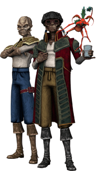

Veequay

Tratti dei Veequay
| Aumento dei punteggi caratteristica | Il punteggio di Costituzione aumenta di 2 e la Saggezza od il Carisma di 1 |
| Eta' | I veequay raggiungono la maturita' intorno ai 18 anni e vivono per meno di un secolo |
| Allineamento | Lato caotico oscuro della forza |
| Taglia | Media |
| Velocita | 9m |
| Olfatto Acuto | Ottieni vantaggio nelle prove di Saggezza (Percezione) che comprendono l'utilizzo dell'olfatto |
| Attacchi Selvaggi | Se infliggi un danno critico con un'arma corpo a corpo puoi tirare uno dei dadi del danno dell'arma una volta in piu' ed aggiungerlo al danno extra del colpo critico |
| Pelle Abbronzata | Quando non indossi alcuna armatura o ne indossi una leggera, la tua CA e' 13 + il modificatore di Destrezza. Inoltre, ottieni vantaggio nei tiri salvezza su Costituzione contro l'esaurimento causato dal caldo intenso |
| Addestramento alle Armi | Sei competente nell'utilizzo di: 2 vibro-armi o blaster a piacere |
| Linguaggi | Sai parlare, leggere e scrivere: Galattico Base e Sriluurian. Sei in grado di comunicare con i tuoi simili, nel raggio di 9m, con l'utilizzo di feromoni. I sensitivi della forza sono in grado di individuare queste comunicazioni ma non sono in grado di comprenderne i contenuti |